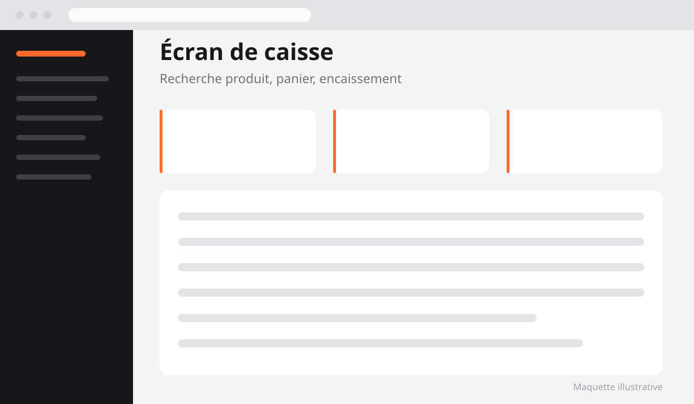
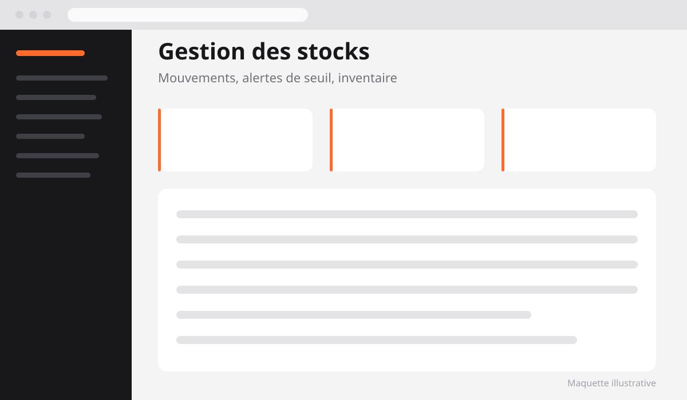
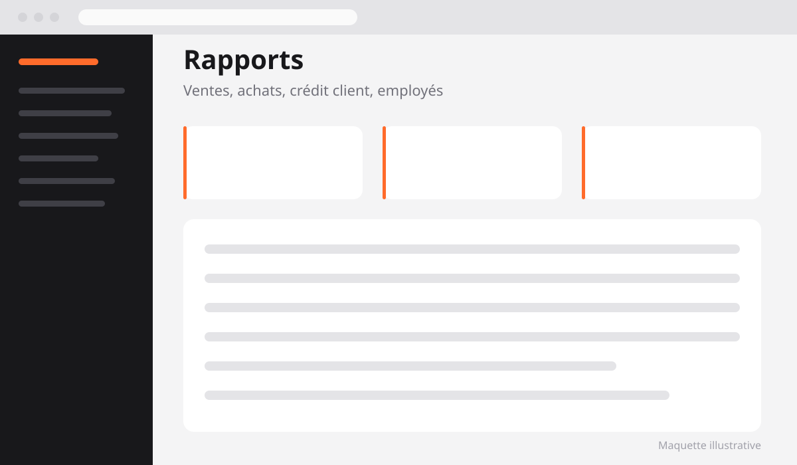

Stock Management, SaaS de gestion de stock et point de vente
Une application SaaS multi-entreprises qui remplace le cahier et le tableur : caisse, stocks, achats, crédit client et rapports dans un seul outil, avec un espace isolé par entreprise.
Client
Commerce de détail (privé)
Rôle
Conception & développement
Statut
En production
Stack
Laravel, Blade, MySQL

9
Modules métier couverts
100 %
Données isolées par entreprise
Kkiapay
Paiement en ligne intégré
RBAC
Rôles & permissions granulaires
Le contexte
Dans beaucoup de commerces de détail, la gestion quotidienne repose encore sur un cahier et un tableur. Le stock théorique ne correspond jamais au stock réel, personne ne sait précisément qui a vendu quoi, et le crédit accordé aux clients réguliers se retrouve noté sur un carnet que l'on finit par perdre. Quand la boutique grandit ou qu'une deuxième s'ouvre, le système craque.
L'objectif de Stock Management était de couvrir tout ce quotidien dans un seul outil accessible depuis un navigateur, et de le faire d'une manière qui puisse servir plusieurs entreprises sans jamais mélanger leurs données. Autrement dit : ne pas construire une application pour une cliente, mais un produit dont elle est la première utilisatrice.
« Un outil de gestion n'est adopté que s'il est plus rapide que le cahier qu'il remplace. Toute la conception a tourné autour de cette contrainte. »
Le périmètre fonctionnel
L'application couvre neuf domaines, pensés comme des modules qui se répondent plutôt que comme des écrans indépendants :
- Ventes et caisse (POS) : écran d'encaissement rapide, recherche produit, panier, remises, impression du ticket
- Produits : catalogue, catégories, unités, prix d'achat et de vente, seuils d'alerte
- Stocks : mouvements d'entrée et de sortie, inventaire, alertes de rupture
- Fournisseurs : répertoire, historique des relations commerciales
- Achats : commandes fournisseurs, réception et impact automatique sur le stock
- Clients et crédit : fiches clients, encours, suivi et règlement des dettes
- Employés et permissions : comptes, rôles et droits d'accès par module
- Rapports : ventes, achats, marges, mouvements de stock, activité par employé
- Paiements en ligne : encaissement via Kkiapay en complément des espèces
S'y ajoute la personnalisation de l'identité visuelle : chaque entreprise règle son logo, ses couleurs et les informations qui apparaissent sur ses tickets de caisse.

L'écran de caisse : tout l'encaissement se fait sans quitter la page.
Les partis pris techniques
Trois décisions ont structuré tout le reste du projet :
Multi-entreprises par défaut
Base de données unique, cloisonnement par identifiant d'entreprise appliqué automatiquement à chaque requête. Impossible d'oublier le filtre.
Permissions granulaires
Rôles et permissions gérés avec Spatie Permission : un vendeur encaisse sans voir les marges, un gérant voit tout, chaque entreprise définit ses règles.
Rendu serveur, zéro build
Blade et Tailwind plutôt qu'une SPA : pages légères, chargement rapide même sur une connexion instable, et déploiement simple à maintenir.
Le déroulé
Du cahier au modèle de données
La première étape a consisté à reproduire fidèlement le fonctionnement existant : comment une vente est enregistrée, comment un client règle une partie de sa dette, ce qui se passe quand une commande fournisseur arrive incomplète. Chaque cas particulier du terrain a été traduit en règle explicite avant d'écrire la première migration.
Cadrage métier
Observation du fonctionnement réel de la boutique, liste des cas particuliers et arbitrage sur ce qui entre dans la première version.
Modèle de données & cloisonnement
Schéma MySQL, relations entre produits, mouvements de stock, ventes et règlements. Mise en place du filtrage automatique par entreprise dès le départ.
Le point de vente en premier
L'écran de caisse a été construit avant tout le reste : c'est celui qui est utilisé cent fois par jour, donc celui dont la rapidité conditionne l'adoption.
Achats, crédit et rapports
Ajout des modules qui alimentent et contrôlent le stock, puis des rapports qui rendent l'activité lisible : ventes, marges, encours clients, activité par employé.
Paiement en ligne & mise en production
Intégration de Kkiapay avec vérification côté serveur, personnalisation de l'identité visuelle, formation de l'utilisatrice et passage en production.

Le module stocks : chaque vente et chaque réception d'achat génère un mouvement traçable.
Tableau de bord : l'activité du jour en un coup d'œil

Rapports : ventes, achats, crédit client, activité par employé
Décisions marquantes
Une seule base, cloisonnée automatiquement
Le choix le plus lourd de conséquences a été celui du modèle multi-tenant. Une base par entreprise aurait offert une isolation parfaite, mais aurait rendu chaque migration et chaque déploiement pénibles à mesure que les clients s'ajoutent. J'ai retenu la base partagée avec une colonne d'entreprise sur chaque table métier, et surtout un filtrage appliqué au niveau du modèle plutôt qu'à chaque requête. La règle est simple : si une requête peut oublier le filtre, elle finira par l'oublier.
Le stock comme journal, pas comme compteur
Plutôt que de stocker une simple quantité que l'on incrémente et décrémente, chaque variation est enregistrée comme un mouvement daté et attribué. La quantité disponible se déduit de ces mouvements. C'est un peu plus de travail à l'écriture, mais cela permet de répondre à la seule question qui compte vraiment quand un écart apparaît : que s'est-il passé, quand, et sous quel compte ?
Le crédit client traité comme un vrai domaine
Le crédit accordé aux clients réguliers est souvent traité comme un champ « reste à payer » posé sur la vente. Ici, les règlements sont des enregistrements à part entière, rattachés au client autant qu'aux ventes concernées. Cela permet d'encaisser un acompte qui couvre plusieurs achats, ce qui correspond à la manière dont les choses se passent réellement au comptoir.
Où en est le projet
L'application est en production et utilisée au quotidien par une cliente. Elle est conçue pour accueillir d'autres entreprises sans modification du code : création de l'espace, paramétrage de l'identité visuelle, création des comptes employés et de leurs permissions.
- Statut : en production, en évolution continue
- Stack : Laravel 13, Blade, Tailwind CSS v4, MySQL, Spatie Permission
- Paiement : Kkiapay, avec vérification serveur des transactions
- Modèle : multi-entreprises, base partagée cloisonnée
Ce que j'en retiens
La difficulté d'un logiciel de gestion n'est presque jamais technique. Elle est dans la traduction fidèle de règles métier que personne n'a jamais écrites, parce qu'elles vivent dans la tête de la personne qui tient la caisse. Le temps passé à observer avant de coder est celui qui a le meilleur rendement sur ce type de projet.
Si je devais recommencer, je mettrais en place la journalisation des mouvements de stock encore plus tôt. Elle a été ajoutée après les premiers écrans, ce qui a demandé de reprendre du code déjà écrit, alors que la traiter comme le socle dès le premier jour aurait simplifié tout le reste.
Un besoin similaire à digitaliser ? Écrivez-moi, je prends des missions en parallèle de mon poste.